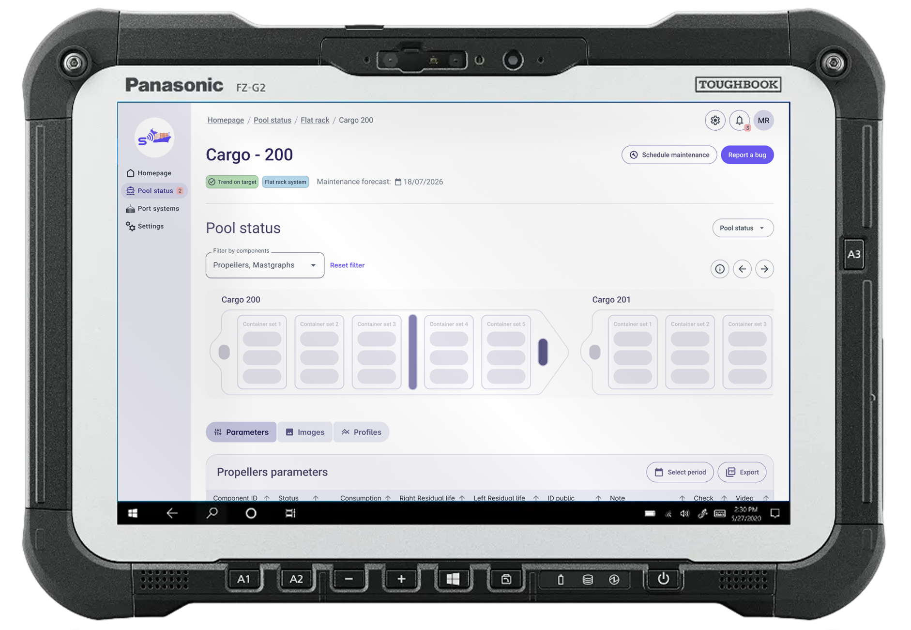
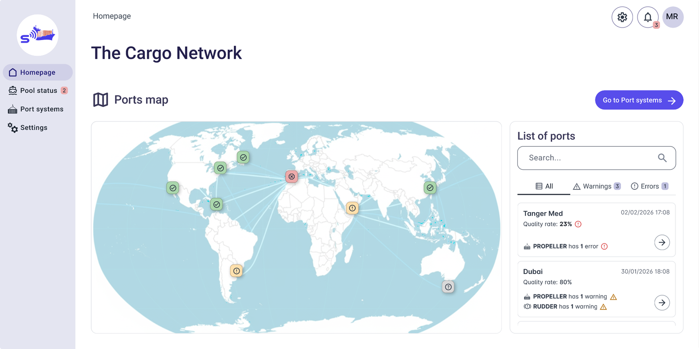
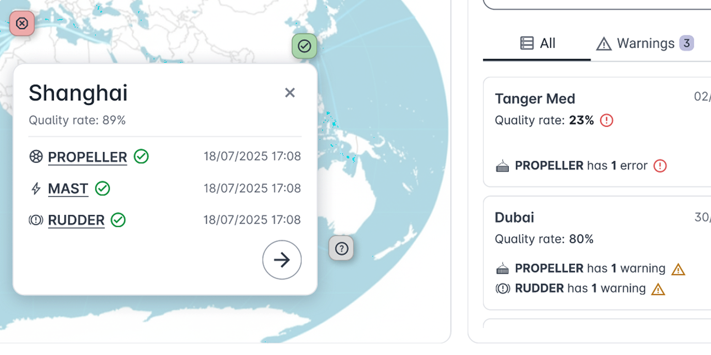
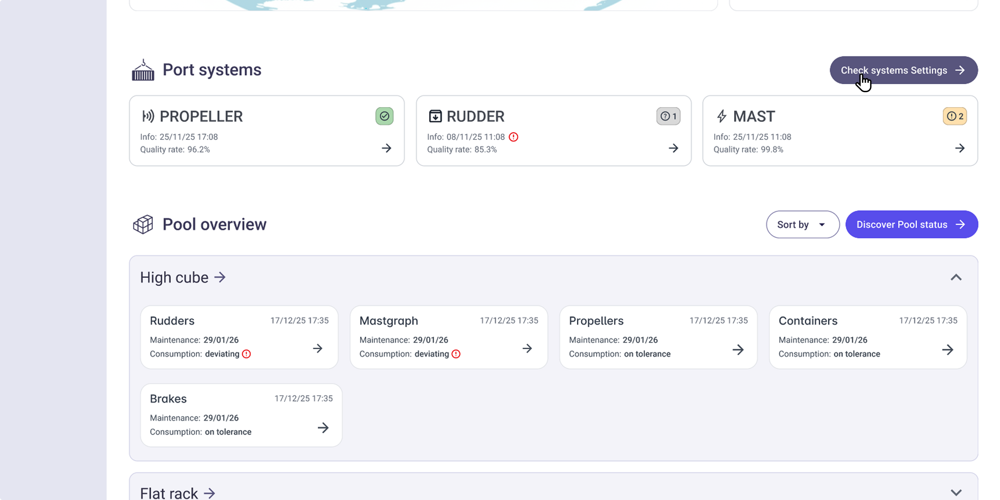

Predictive maintenance ecosystem redesign
Role: UX & UI Designer, Accessibility specialist
Scope: Analysis, Usability Review, Information Architecture, Wireflow & Wireframing

Context & Methodology
The Esse Diagnostic Systems (fictional name due to NDA restrictions) platform is an integrated solution designed to support the acquisition, management, and sharing of measurement data related to cargo, containers, rudders, and malt within a maritime network environment. The objective of the project was to conduct a comprehensive assessment of the existing system (as-is) and define a strategic redesign proposal (to-be), aimed at improving usability, structural clarity, and overall user experience.
I contributed to a deep analysis phase focused on understanding both the technical architecture and the current user interface ecosystem.
A systematic collection of screenshots and annotations was carried out to document navigation flows, functionalities, and interaction patterns. This process enabled the reconstruction of a functional map of the entire product.

Personas, Roles & Usage Contexts
End-users were mapped according to roles, operational responsibilities, and real usage scenarios. This helped define user needs, behavioral patterns, and environmental constraints influencing interaction with the system. Then, we conducted an expert usability evaluation, focusing on ergonomics, navigation efficiency, information hierarchy, and users’ cognitive load. The UX review was conducted on FigJam space. Low- and mid-fidelity wireframes were developed for key interfaces, redefining layout structure, interaction patterns, and content hierarchy to ensure clarity, consistency, and scalability and to smoothly show our client all the possible paths. Following the assessment phase, I collaborated on the definition of the new interface structure, starting by the fundation of the tailor-made UI kit, inspired to Angular Material UI. The renewed navigation model was designed and presented as a comprehensive wireflow, outlining the overall system logic and user journeys across modules.

High-Fidelity Interface & System Architecture
The proposed high-fidelity interface is structured into three main macro-sections, initially designed to support a “super user” profile and conceived to be customizable for different user roles in terms of features, permissions, and access levels.
Design Principles Applied
Across every section and page, the redesign focused on:
- Structural clarity and modular scalability
- Immediate visual feedback for critical states
- Progressive disclosure of complexity
- Data-driven decision support
- Accessibility compliance
- Role-based customization potential
The result is a cohesive, scalable, and future-proof digital ecosystem that transforms a technically complex diagnostic infrastructure into an intuitive and strategically navigable platform.
Quick overview and core interactions
Snapshots & annotations

All labels shown are editable and presented for demonstration purposes only (e.g., the heading "The Cargo Network").
Our design adheres to WCAG 2.1 success criteria 1.4.3 and 1.4.11: texts and interactive components have sufficient contrast ratios for best perceivability.
To guarantee an accessible alternative to the map view, we designed the list-based port visualisation on the left.

Each port is represented as an icon-button on the map. The visual status indicators, such as a red error icon, immediately communicate critical conditions.
Clicking a port icon, an overlay shows:
- Main data about the selected port
- Specific error or warning details (if present)
- A direct link to the specific port page
The icon-buttons in the map include alt texts, describing the port name and any associated warning or error state.

The Port Systems section provides a quick look at the overall diagnostic systems health status.
The Pool Overview section offers at-a-glance visualization of container categories within a given site’s operational pool and their aggregated status per diagnostic component.
To reduce cognitive overload, we opted for visual alerts only for errors, thus ensuring critical issues catch the user's eye immediately.

A minimal, modular representation for a fully interactive deck.
To enable a granular selection for expert users, component-level filtering has been introduced.
To assist novice or first-time users, we introduced the legend tool for additional guidance and to improve usability.

Report a bug tool ensures efficient communication by combining instant issue reporting with immediate access to direct support contacts.
Authorized users can access the System Info section to monitor diagnostic health and verify system configurations through the Nodes Map on the right.